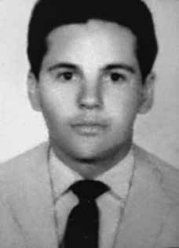

Ângelo
Cardoso
da Silva
CIRCUNSTÂNCIAS DA MORTE
A partir de abril de 1970, a organização M3G, da qual Ângelo Cardoso da Silva fazia parte, foi intensamente perseguida pelas forças da repressão gaúchas e, nesse contexto, vários de seus membros foram presos. Entre eles estava o dirigente Edmur Péricles Camargo, Giovanni Enrico Bucher, e Paulo de Tarso Carneiro, que viria a ser a principal testemunha sobre a prisão de Ângelo junto à CEMDP.
Documentos encontrados por pesquisadores da Comissão Nacional da Verdade (CNV) comprovam que as atividades políticas de Ângelo Cardoso da Silva eram monitoradas tanto pelo CISA quanto pelo DOPS-RS. Ângelo Cardoso da Silva foi encontrado morto em sua cela, no Presídio Central de Porto Alegre, no dia 23 de abril de 1970. Segundo a versão apresentada à época, Ângelo teria cometido suicídio por meio de enforcamento. Versão contestada pelo próprio Estado quando, em 1973, abriu um inquérito policial para apurar as circunstâncias de morte. Contudo, o caso logo foi arquivado pela justiça comum, sob alegação de falta de provas.
Analises posteriores realizadas por comissões parceiras dos laudos anexados ao supracitado inquérito contestam a versão da época. Segundo fotos encontradas nos laudos do inquérito, indicam que Ângelo teria sido estrangulado mediante ação externa, e não “enforcado”. A morte de Ângelo Cardoso da Silva sucedeu-se em circunstâncias nunca totalmente esclarecidas, porém muito se assemelha à prática comum naquele contexto da história brasileira, em que agentes do Estado não raro simulavam a ocorrência de suicídio para ocultar a morte decorrente de tortura. O corpo de Ângelo Cardoso da Silva foi sepultado no cemitério de Viamão (RS).
From April 1970, the M3G organization, of which Ângelo Cardoso da Silva was a member, was intensely persecuted by the forces of repression in Rio Grande do Sul and, in this context, several of its members were arrested. Among them were the leader Edmur Péricles Camargo, Giovanni Enrico Bucher, and Paulo de Tarso Carneiro, who would become the main witness about Ângelo's arrest at CEMDP.
Documents found by researchers from the National Truth Commission (CNV) prove that Ângelo Cardoso da Silva's political activities were monitored by both CISA and DOPS-RS. Ângelo Cardoso da Silva was found dead in his cell, at the Porto Alegre Central Prison, on April 23, 1970. According to the version presented at the time, Ângelo had committed suicide by hanging. A version contested by the State itself when, in 1973, it opened a police investigation to determine the circumstances of death. However, the case was soon dismissed by the common justice system, alleging a lack of evidence.
Subsequent analyzes carried out by partner committees of the reports attached to the aforementioned investigation contest the version at the time. According to photos found in the investigation reports, they indicate that Ângelo had been strangled through external action, and not “hanged”. The death of Ângelo Cardoso da Silva occurred in circumstances that have never been fully clarified, but it is very similar to the common practice in that context of Brazilian history, in which State agents often simulated the occurrence of suicide to hide the death resulting from torture. The body of Ângelo Cardoso da Silva was buried in the Viamão cemetery (RS).
Desde abril de 1970, la organización M3G, de la que era miembro Ângelo Cardoso da Silva, fue intensamente perseguida por las fuerzas de represión en Rio Grande do Sul y, en ese contexto, varios de sus miembros fueron detenidos. Entre ellos se encontraban el líder Edmur Péricles Camargo, Giovanni Enrico Bucher y Paulo de Tarso Carneiro, quien se convertiría en el principal testigo de la detención de Ângelo en el CEMDP.
Documentos encontrados por investigadores de la Comisión Nacional de la Verdad (CNV) prueban que las actividades políticas de Ângelo Cardoso da Silva fueron monitoreadas tanto por el CISA como por el DOPS-RS. Ângelo Cardoso da Silva fue encontrado muerto en su celda, en la Prisión Central de Porto Alegre, el 23 de abril de 1970. Según la versión presentada en ese momento, Ângelo se había suicidado en la horca. Una versión cuestionada por el propio Estado cuando, en 1973, abrió una investigación policial para determinar las circunstancias de la muerte. Sin embargo, el caso pronto fue desestimado por la justicia común, alegando falta de pruebas.
Análisis posteriores realizados por comités socios de los informes adjuntos a la mencionada investigación cuestionan la versión de entonces. Según fotografías encontradas en los informes de la investigación, indican que Ângelo había sido estrangulado por acción externa, y no “ahorcado”. La muerte de Ângelo Cardoso da Silva ocurrió en circunstancias que nunca han sido completamente esclarecidas, pero es muy similar a la práctica común en ese contexto de la historia brasileña, en el que agentes del Estado a menudo simulaban la ocurrencia del suicidio para ocultar la muerte resultante de la tortura. El cuerpo de Ângelo Cardoso da Silva fue enterrado en el cementerio de Viamão (RS).